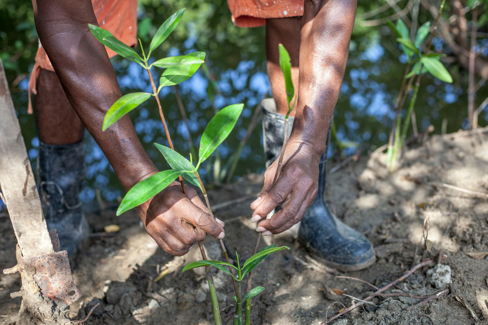
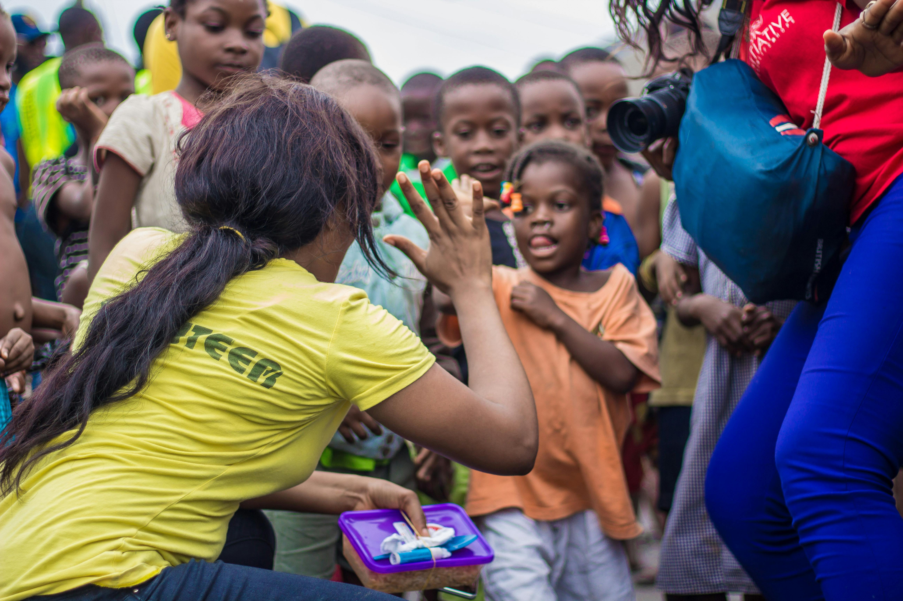
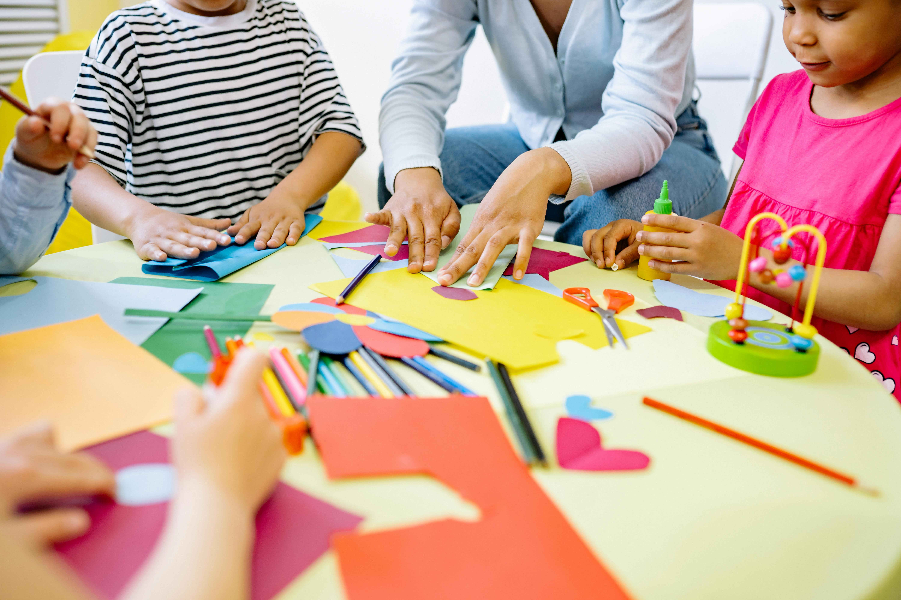
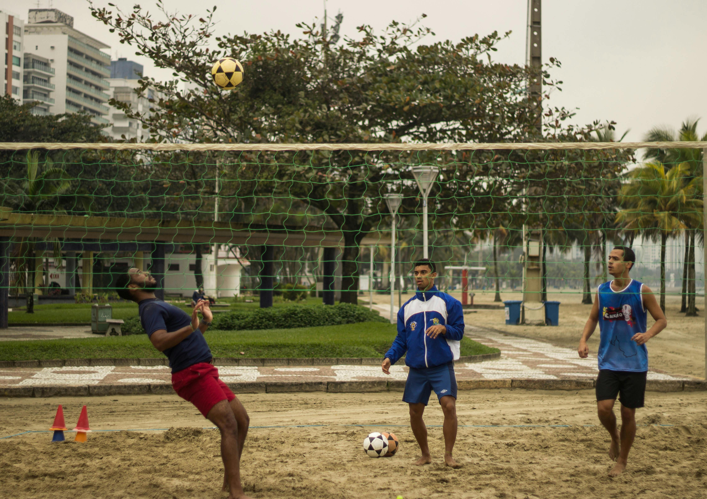

Agricultural Business Companies
Assisting local farmers with modern farming techniques to increase productivity.
Business
Skills Training: Providing training on business management practices for agricultural
enterprises.
Research Projects: Engaging in research related to crop
improvement or pest
control methods.
Market Access Support: Helping farmers access markets by
developing
marketing strategies or establishing cooperatives.

TECHNOLOGY
The tech sector offers opportunities for volunteers with IT skills:
Digital Literacy
Training:
Teaching basic computer skills to students or adults who lack access to technology education.
Software Development Projects: Contributing to software solutions tailored for
local businesses or
educational institutions.
Tech Workshops: Organising workshops focused on
coding, web design, or
app development for aspiring tech enthusiasts.
Community Development Projects
Needs Assessment: Collaborating with community leaders to identify pressing
issues such as
sanitation, housing, and infrastructure.
Project Implementation:
Participating in the execution of
projects aimed at improving community facilities like water supply systems or health clinics.
Capacity Building: Training community members on skills such as leadership,
project management,
and financial literacy.
Sustainability Initiatives: Promoting sustainable
practices through
environmental conservation projects or renewable energy initiatives.

Education and Special Basic Schools
Teaching Assistance: Supporting local teachers by providing additional help in
classrooms,
especially in subjects like English, Mathematics, and Science.
Curriculum
Development: Assisting
in developing inclusive curricula that cater to diverse learning needs.
Extracurricular
Activities: Organizing sports, arts, and cultural activities to enhance students’
overall
development.
Training Workshops: Conducting workshops for teachers on modern
teaching
methodologies and inclusive education practices.

Entrepreneurial Hubs and Innovation Hubs
Volunteers interested in entrepreneurship can work with innovation hubs that support startups and
small businesses:
Mentorship Programs: Offering guidance to budding
entrepreneurs on business
planning and strategy development. Workshops and Seminars: Conducting sessions on topics like
digital marketing, financial management, and product development.
Networking Events:
Facilitating
connections between entrepreneurs and potential investors or partners.
Resource
Development:
Assisting hubs in creating resource materials that support entrepreneurial growth.
Sports
The tech sector offers opportunities for volunteers with IT skills:
Digital Literacy
Training:
Teaching basic computer skills to students or adults who lack access to technology education.
Software Development Projects: Contributing to software solutions tailored
for local businesses or
educational institutions.
Tech Workshops: Organising workshops focused on coding, web design, or
app development for aspiring tech enthusiasts.
